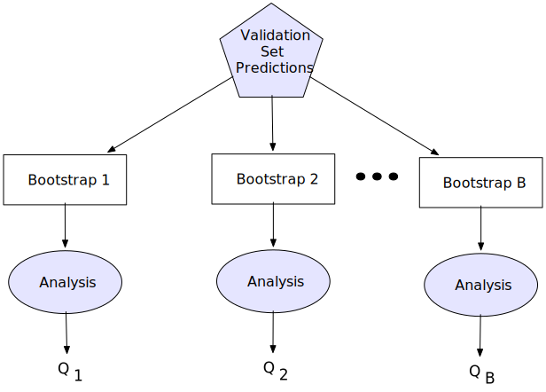

14 Comparing Models
So far, we have established several key fundamentals of building predictive models. To create an effective model, we must employ strategies to reduce overfitting, use empirical validation techniques to accurately measure predictive performance, and systematically search a tuning parameter space to identify values that optimize model quality. By following these approaches, we can have confidence that our model generalizes well to new, unseen data and provides a realistic estimate of its efficacy.
With this foundation in place, the next step is to select the best model for a given data set. When presented with new data, we typically evaluate multiple machine learning models, each with different sets of tuning parameters. Our goal is to select the model and parameter combination that yields the best results. But how do we determine which is truly the best?
Making this decision requires considering several factors. As briefly discussed in Chapter 2, practical characteristics such as model complexity, interpretability, and deployability play an important role. Predictive ability, however, is an objective measure that can be evaluated quantitatively. Comparing metrics across models raises an important question: How can we be sure that one model’s quality is truly superior to another’s? Or, conversely, how can we conclude that multiple models have no significant difference in performance?
To address these questions, we will examine both graphical and statistical techniques for comparing the performance statistics of different models. During the model tuning and training process, these comparisons may involve assessing various configurations of tuning parameters within a single model or comparing fundamentally different modeling approaches.
Empirical validation (e.g., resampling) serves as the backbone of the tuning and training process. It systematically partitions the data into multiple subsets, enabling repeated estimation of performance metrics. The variability from the different assessment sets provides critical information for selecting optimal tuning parameters or identifying the best-performing model.
In the first part of this chapter, we will focus on methods for evaluating models when replicate estimates of performance metrics are available. This includes techniques grounded in Frequentist and Bayesian frameworks. After that, we will explore the case of a single data set. This is relevant when a single holdout set is used during model development (i.e., a validation set) and also when the test set is evaluated.
14.1 Resampled Data Sets
As a refresher, resampling produces multiple variations of the training set. These are used to metric estimates, such as accuracy or R2, that should mimic the results we would see on data sets similar to the training set.
The tools in this section are very similar to those described for model racing in Section 11.3.3, and we’ll use the same notation as that section. Similarly, we’ve discussed the two main philosophies of statistical analysis (Frequentist and Bayesian) in Section 6.4.3 and Section 12.5.2. Many of those ideas play out again in this chapter.
14.1.1 Statistical Foundations
Regardless of whether we take a Frequentist or Bayesian philosophies to comparing model performance, both methods aim to identify key factors that influence the outcome, such as model-to-model effects. We seek to determine whether the effect of these factors is statistically significant—that is, unlikely to be due to random chance.
To illustrate these statistical techniques, we will use the same data that will be used in later chapters on classification: the Washington State forestation data introduced in Chapter 3. Our goal is to predict whether a location is classified as forested or non-forested. The data set includes predictors such as elevation, annual precipitation, longitude, latitude, and so on.
Without going into much detail, we’ll focus on comparing three modeling strategies that will be described in Part 4:
A boosted tree ensemble using C5.0 trees as the base learner. This model was tuned over the number of trees in the ensemble and the amount of data required to make additional splits (a.k.a. \(n_{min}\)). Grid search found that 60 trees in the ensemble were optimal, in conjunction with \(n_{min}\) = 20 training set points.
A logistic regression model that was trained using penalization (Section 16.2.4). Feature engineering included an effect encoding parameterization of the county associated with locations, a small set of interaction terms (described in Section 16.1), and ten spline terms for several of its numeric predictors. The optimal tuning parameter values were a penalization value of 10-4.67 and 0% Lasso penalization.
A naive Bayes model (Section 17.1.1) was used where the conditional distributions were modeled using a nonparametric density estimate. No feature preprocessing was used.
One difference between these analyses and those to come in Part 4 is that we’ve chosen to use classification accuracy as our metric1. Some of these results may differ from upcoming analyses. Previously, the spatially aware resampling scheme that was used generated 10 resamples of the training set. For this reason, there are 10 different accuracy “replicates” for each candidate value that was evaluated.
Similar to previous sections, we’ll produce models where the replicated performance statistics (denoted as \(\widehat{Q}_{ij}\)) are the outcomes of the model (for resample \(i\) and model \(j\)). This is the same general approach shown in Equation 11.1 and Equation 12.5. We’ll assume that there are \(M\) models to compare (three in our case).
14.1.2 Frequentist Hypothesis Testing Methods
Let’s begin by building towards an appropriate statistical model that will enable us to formally compare the efficacy of models. To begin this illustration, let’s suppose that each of these models was built separately using different 10-fold partitions of the training data. In this scenario, the metrics on the first holdout fold would be unique, or independent, for each model. If this were the case, then we could represent the desired performance metric with the following linear statistical model:
\[ Q_{ij} = \beta_0 + \sum_{j=1}^{M-1}\beta_jx_{ij} + \epsilon_{ij} \tag{14.1}\]
In this equation \(\beta_0\) is the overall average performance statistic across all assessment sets and models2. The term \(\beta_{j}\) represents the incremental impact on the outcome due to the \(j^{th}\) model (\(j\) = 1, 2, …, \(M-1\) = total number of models), and \(x_{ij}\) is an indicator function for the \(j^{th}\) model. In this example, the \(\beta_j\) will be considered as a fixed effect. This indicates that these are the only models that we are considering. If we were to have taken a random sample of models, then the \(\beta_j\) would be treated a random effect which would have a corresponding statistical distribution. The distinction between fixed and random effects will come into play shortly. Finally, \(\epsilon_{ij}\)) represents the part of the performance that is not explainable by the \(i^{th}\) assessment set and \(j^{th}\) model. We’ll assume these residuals follow a Gaussian distribution with a mean of zero and an unknown variance3. The model, along with the statistical assumption about the distribution of the residuals, provides the statistical foundation for formally comparing models.
Figure 14.1 illustrates these separate components for the assessment set with the largest accuracy value for the boosting ensemble, where the overall intercept is determined by the logistic regression. The horizontal dashed line represents the overall mean of the accuracy estimates, and the blue bar shows the mean of the boosting estimates alone. It is slightly higher than the average. For that model, the orange line shows the residual (\(\epsilon_{ij}\) for the largest boosted tree accuracy replicate. The totality of such errors is used to measure the overall error in the model.
Equation 14.1 enables us to distinctly partition the total variability in the outcome data into two components:
- Explained variability: The portion attributable to differences among models, represented by the blue bar. This is the signal in the data set.
- Unexplained variability: The portion due to random or unaccounted-for factors, represented by the orange bar, is commonly called the noise.
Our key question is whether the observed differences in the mean performance for each model reflect genuine differences among models or if they could simply be due to random variation. The Frequentist approach addresses this question using hypothesis testing. In this framework:
The null hypothesis (\(H_0\)) represents the assumption that all models have the same average performance. Formally, this can be written as:
\[ H_0: \beta_k = \beta_m, \] for all \(k = m\).The alternative hypothesis (\(H_A\)) asserts that at least two models have significantly different average performance:
\[ H_A: \beta_{k} \neq \beta_{m}, \]
for any \(k \neq m\).
To determine whether we have sufficient evidence to reject the null hypothesis, we compare:
- Between-group variability (signal): Differences in mean performance across models.
- Within-group variability (noise): Residual variation not explained by the models.
This comparison is conducted using a test whose statistic follows an F distribution (Kutner, Nachtsheim, and Neter 2004), which assesses whether the signal is large enough relative to the noise to conclude that differences among models are statistically significant.
In this case, the F-statistic is (3.06, 2, 27)4, with a corresponding p-value of 0.0633. The p-value is small. However, it is not small enough to conclude that there is strong evidence to reject the null hypothesis. Therefore, we would not conclude that there are differences in accuracy among the three models. However, remember that we treated these data as if the resamples were completely different, which was not the case. As you’ll see shortly, this is a seriously flawed analysis of our data.
In practice, when tuning and training models, we use the same resampling sets to evaluate their performance. This is a more efficient approach since we only need to set up the resampling scheme once. Moreover, the structure generated by using the same assessment sets will enable us to detect differences in quality between models more effectively.
In this setting, each assessment set forms what is known as a block, which is a group of units that are similar to each other. This grouping is an important piece of information that will aid in assessing whether models have statistically different performance. The predictive performance when tuning multiple models using the same cross-validation assessment sets can now be represented as:
\[ Q_{ij} = (\beta_0 + \beta_{0i}) + \sum_{j=1}^{M-1}\beta_jx_{ij} + \epsilon_{ij} \tag{14.2}\]
Notice that Equation 14.2 is nearly the same as Equation 14.1, with the additional term \(\beta_{0i}\). This term represents the incremental impact on performance due to the \(i^{th}\) assessment set (\(i\) = 1, 2,…, \(B\) resamples). In this model, the impact of the \(B\) resamples, represented by \(\beta_{0i}\) are a random effect. The reason the resamples are considered as random effects is because the 10 folds were selected at random from an overall distribution of resamples. The impacts of each model are still considered as fixed effects. When a model contains both fixed and random effects, it is called a mixed effect model.
Figure 14.2 illustrates these separate components for the assessment set with the largest accuracy value for the boosted tree. In this figure, the points are connected based on the fold. The green line shows that the residual for the best boosting accuracy can be explained by the fact that it comes from this specific fold (i.e., resample). For whatever reason, this specific assessment set was easier to predict since all models had the highest accuracies. The resample that is associated with each accuracy is a systematic and explainable effect in these data. It’s also a “nuisance parameter” because we don’t care about this specific trend.
The mixed model can quantify the effect of this nuisance parameter; we can subtract its effect from the overall error, yielding a much smaller value of \(\epsilon_{ij}\) as evidenced by the updated vertical orange bar. Notice that the total amount of variability explained by the model is identical to Figure 14.1. However, the previously unexplainable variability from Figure 14.2 is now mostly explained by the variation due to the fold, thus reducing the unexplainable variability. We have made our analysis much more precise by accounting for the resample effect5.
To understand if there are differences between models, we again compare the variability explained by the different models with the unexplainable variability. The signal relative to the noise is now much stronger, enabling us to more easily see differences in model performance. The F-statistic from this model is (20.42, 2, 18) and has a corresponding p-value of < 10-4. By utilizing the same cross-validation scheme across models, there is now strong evidence of a difference in performance among the models.
This result does not tell us which models are different. To understand that, we need to perform additional tests to compare each pair of models. These tests are referred to as post hoc tests because they are performed after the initial hypothesis test among all means. To learn more details about post hoc tests and the field of multiple comparisons, see Hsu (1996) and/or Dudoit and Van Der Laan (2008) .
14.1.2.1 Post Hoc Pairwise Comparisons and Protecting Against False Positive Findings
After detecting a significant effect in a one-way analysis of variance (ANOVA), the next step is to determine which specific groups differ from each other. This is achieved using post hoc pairwise comparisons, which assess all possible pairwise differences while controlling for false positive findings.
When conducting multiple comparisons, the risk of making at least one Type I error (false positive) increases. If we compare many pairs of groups separately, the probability of incorrectly rejecting at least one null hypothesis accumulates, leading to spurious findings. If this issue is not addressed, then we will eventually conclude that models are different when they actually are not. To mitigate this, statistical procedures adjust for multiple comparisons to ensure that the overall false positive rate remains controlled. Two methods for this purpose are Tukey’s Honestly Significant Difference (HSD) (Tukey 1949) and the False Discovery Rate (FDR) procedures (Efron and Hastie 2016, chap. 15).
Tukey’s HSD test focuses on controlling the probability of making at least one false discovery; this is known as the familywise error rate (FWER). The HSD test is specifically designed for one-way ANOVA post hoc comparisons and ensures that the FWER remains at a pre-determined significance level (\(\alpha\) = 0.05).
The test considers all possible pairwise differences while maintaining a constant error rate across comparisons. To contrast models \(i\) and \(j\), the test statistic is calculated as:
\[ T_{HSD} = \frac{\bar{Q}_i - \bar{Q}_j}{\sqrt{MS_{within} / n}} \]
where, \(\bar{Q}_i\) and \(\bar{Q}_j\) are the sample means of each model’s outcome data, \(MS_{within}\) is the mean square error from the ANOVA, and \(n\) is the number of observations per group. The critical value for \(T_{HSD}\) is obtained from the studentized range distribution, which depends on the number of groups and the degrees of freedom from the ANOVA error term.
When we desire to compare the performance of each pair of models, then Tukey’s HSD procedure will provide the appropriate adjustments to the p-values to protect against false positive findings as it becomes overly conservative.
In settings where many hypotheses are tested simultaneously, we may be more interested in the false discovery rate (FDR): the expected proportion of false positives among all rejected hypotheses. With many comparisons, this can be more appropriate than controlling the familywise error rate.
There are numerous FDR procedures in the literature. The method by Benjamini and Hochberg (1995) is the simplest. It ranks the p-values from all pairwise comparisons from smallest to largest (\(p_1\), \(p_2\), …, \(p_m\)) and compares them to an adjusted threshold:
Rank the p-values in ascending order, assigning each a rank \(i\).
Compute the critical value for each comparison: \[ p_{crit} = \frac{i}{m} \alpha \] where \(m\) is the total number of comparisons and \(\alpha\) is the desired FDR level.
Find the largest \(i\) where \(p_i \leq p_{crit}\), and reject all hypotheses with p-values at or below this threshold.
Unlike Tukey’s method, FDR control is more appropriate when performing many comparisons. This procedure offers a balance between sensitivity (detecting true differences) and specificity (limiting false positives).
Now, let’s compare how these methods perform when evaluating each pair of models in our example. Table 14.1 presents the estimated differences in accuracy, standard error, degrees of freedom, raw, unadjusted p-values, and the p-values adjusted using the Tukey and FDR methods for each pairwise comparison. Notice that the Tukey adjustment results in less significant p-values than the FDR adjustment. Regardless of the adjustment method, the results indicate that each model’s performance differs statistically significantly from the others. Specifically, the boosting model has a higher accuracy than the other two models.
| Comparison | Estimate | SE | DF |
p-value Adjustment
|
||
|---|---|---|---|---|---|---|
| Unadjusted | Tukey | FDR | ||||
| Boosting - Logistic | 0.79% | 0.67% | 18 | 0.25544 | 0.48276 | 0.25544 |
| Boosting - Naive Bayes | 4.04% | 0.67% | 18 | 0.00001 | 0.00003 | 0.00003 |
| Logistic - Naive Bayes | 3.25% | 0.67% | 18 | 0.00013 | 0.00036 | 0.00019 |
In this table, we can see that we have no evidence that boosting and logistic regression have different accuracies, but both of these models are statistically different from naive Bayes (no matter the adjustment type).
14.1.2.2 Comparing Performance using Equivalence Tests
In the previous section, we explored how to determine whether one model significantly outperforms another in a metric of choice. However, there are cases where we may instead want to assess whether the models perform similarly in a practically meaningful way. To do this, we use an equivalence test, which differs from the traditional hypothesis test, which aimed to detect differences between models.
Equivalence testing is based on the concept that two models can be considered practically equivalent if their difference falls within a predefined margin of indifference, often denoted as \(\theta\). This threshold represents the maximum difference that is considered practically insignificant. To illustrate equivalence testing, let’s begin by reviewing the hypothesis testing context for assessing differences between models. Let \(\beta_1\) and \(\beta_2\) represent the mean quality of two models. The null hypothesis for a standard two-sample test of difference is:
\[ H_O: \beta_1 = \beta_2 \]
while the alternative hypothesis is:
\[ H_A: \beta_1 \neq \beta_2 \]
However, an equivalence test reverses this logic. The null hypothesis is that the models are not equivalent, and the alternative hypothesis is that the models are practically insignificant:
\[ H_0: |\beta_1 - \beta_2| \geq \theta \tag{14.3}\]
\[ H_A: |\beta_1 - \beta_2| \lt \theta \tag{14.4}\]
Using this framework, we might reject the null hypothesis and conclude that the models are equivalent within the predefined margin of indifference.
A commonly used approach for equivalence testing is the Two One-Sided Test (TOST) procedure (Schuirmann 1987). This method involves conducting two separate one-sided hypothesis tests as defined in Equation 14.3 and Equation 14.4. Specifically, one test assesses the lower bound comparison while the other test assesses the upper bound comparison as follows:
Lower bound:
\[ H_0: \beta_1 - \beta_2 \geq -\theta \]
\[ H_A: \beta_1 - \beta_2 > -\theta \] Upper bound:
\[ H_0: \beta_1 - \beta_2 \leq \theta \] \[ H_A: \beta_1 - \beta_2 > \theta \]
Each test is conducted at a desired significance level \(\alpha\), and if both null hypotheses are rejected, we conclude that the model performance is equivalent based on the predefined margin of indifference.
Schuirmann showed that the two one-sided hypotheses can be practically evaluated by constructing a \(100(1-2\alpha)\%\) confidence interval for \(\beta_1 - \beta_2\). If this interval is contained within the boundaries of (\(-\theta\), \(\theta\)), then we can reject the null hypothesis and conclude that the two models have equivalent performance.
Selecting an appropriate margin of indifference is crucial and should be determined prior to conducting the statistical test. What value should we choose? The answer to this question is problem-specific and depends on what we believe makes a sensible difference in performance.
From the previous section, we saw that the largest expected difference between any pair of models was 4%. For the sake of this illustration, let’s suppose that the margin of practical indifference between models is at least \(\pm\) 3 percent in accuracy.6
To perform the equivalence tests, we use the same ANOVA model as when testing for differences in Equation 14.2 and estimate the 90% confidence intervals about each pairwise difference. Because we are making multiple pairwise comparisons, the intervals need to be adjusted to minimize the chance of making a false positive finding. This adjustment can be done using either the Tukey or FDR procedures.
Figure 14.3 presents the Tukey-adjusted 90% confidence intervals for each pairwise difference between models. For the forestation data, we would only conclude that the boosting ensemble and the logistic regression are equivalent.

14.1.3 Comparisons Using Bayesian Models
How would we use a Bayesian approach to fit the model from Equation 14.2? To start, we can again assume a Gaussian distribution for the errors with standard deviation \(\sigma\). One commonly used prior for this parameter is the exponential distribution; it is highly right-skewed and has a single parameter. Our strategy here is to use very uninformative priors so that the data have more say in the final posterior estimates than the prior. If our model were useless, the standard deviation would be very large and would probably be bounded by the standard deviation of the outcome. For our data, that value for the accuracy is 4.1%. We’ll specify an exponential prior to use this as the mean of its distribution.
We’ll also need to specify priors for the three \(\beta\) parameters. A fairly wide Gaussian would suffice. We’ll use \(\beta_j \sim N(0, 5)\) for each.
For the random effects \(\beta_{0i}\), the sample size is fairly low (10 resamples per model). Let’s specify a bell-shaped distribution with a wide tail: a \(t\)-distribution with a single degree of freedom. This would enable the Bayesian model to have some resample-to-resample effects that might be considered outliers if we assumed a Gaussian distribution.
We’ll discuss training Bayesian models in Section 16.2.5, so we’ll summarize here. Given our priors, there is no analytically defined distribution for the posterior. To train the model, we’ll use a Markov-chain Monte Carlo (MCMC) method to slowly iterate the posterior to an optimal location, not unlike the simulated annealing process previously described. To do this, we create chains of parameters. These are a controlled random walk from a starting point. Once that walk appears to converge, we continue generating random data points that are consistent with the optimized posterior. These random points will numerically approximate the posterior, and from these, we can make inferences. We’ll create 10 independent chains, and each will have a warm-up phase of 5,000 iterations and then another 5,000 samples to approximate the posterior. If all goes well, we will have a random sample of 50,000 posterior samples.
The resulting posterior distributions for the mean accuracy for each of the three models are shown in Figure 14.4 along with 90% credible intervals. The posteriors are relatively bell-shaped, and although there are discernible shifts between the models, there are overlaps in these distributions.
We can also use the posteriors to estimate how much of the error in the data was associated with the resample-to-resample effect (i.e., the previously described nuisance parameter). The percentage of total error attributable to the resample-to-resample effects is 82.5%. This illustrates how important it is to account for all of the systematic effects, wanted or unwanted, in the model.
Since we are interested in contrasting models, we can get a sample of the posterior and take the difference between the parameters that correspond to the model terms (i.e., \(\beta\) parameters). We can create a large number of these samples to form posterior distributions of the pairwise contrasts and compute credible intervals. Bayesian modeling does not use the null hypothesis testing paradigm as Frequentist methods, so it is unclear whether post hoc adjustments are needed or how that would be computed. See Gelman, Hill, and Yajima (2012) and Ogle et al. (2019) for discussions. Figure 14.5 illustrates posteriors for the pairwise contrasts.
Based on these results, we would reach the same conclusion as the Frequentist results; the boosting and logistic regression models are the only pair to appear to have comparable accuracies. We can compute probability statements such as “There is a 85.4% probability that the boosting ensemble exhibits a higher accuracy than logistic regression.”
In addition to utilizing the posterior distribution to compute probabilities of difference, we can also use this distribution to calculate probabilities of similarity or equivalence. The region of practical equivalence (ROPE) defines a range of metric values that we believe contains practically insignificant results (Kruschke 2014). When using the equivalence testing from Section 14.1.2.2, we considered models equivalent if the accuracy was within 3%. Using this region, the posterior distribution of the parameter of interest is used to generate a probability that the parameter is within this region. If a large proportion of the posterior distribution falls within the ROPE, we can conclude that the difference is minimal.
The primary difference between the Frequentist and Bayesian equivalence testing lies in interpretation and flexibility. Frequentist equivalence testing is based on pre-specified significance levels and long-run error rates. Bayesian ROPE, on the other hand, provides a probability-based assessment of practical equivalence. This is particularly useful in predictive modeling, where slight differences in performance may not be operationally relevant.
Figure 14.6 illustrates the ROPE for the forestation data, defined as \(\pm\) 3% accuracy. The probability mass within this region, shown in blue, represents the likelihood that the models have equivalent performance based on this criterion. Table 14.2 summarizes the probabilities for each model comparison.
For instance, there is an overwhelming probability that boosting and logistic regression are practically equivalent. The other two comparisons (with naive Bayes) show scant evidence of the same.
| Comparison | Probability of Practical Equivalence |
|---|---|
| Boosting vs Logistic | 0.997 |
| Boosting vs Naive Bayes | 0.081 |
| Logistic vs Naive Bayes | 0.362 |
14.2 Single Holdout Data Sets
Unlike resampled data sets, validation sets and test sets offer a single “look” at how well the model operates. In the case of the validation set, we would repeatedly use it to guide our model development process, much like how we would rely on resamples. For the test set, it should only be evaluated once, hopefully on a single model, but perhaps to make a final choice between a select few. It is not intended for repeat use. In the discussions below, we’ll use the term “holdout set” to describe the validation or test set, without loss of generality. In this scenario, the focus will be on Frequentist methods by way of bootstrap sampling (Efron 1979, 2003), which we have seen previously.
You were first introduced to the bootstrap in Section 10.6, where it was applied to estimate model performance during tuning. In essence, the bootstrap involves resampling with replacement from the available data to estimate the sampling variability of a statistic. This variability can then be used to construct confidence intervals of the performance metrics of interest, offering a range of plausible values for model performance on similar validation sets.
Figure 10.7 illustrates the bootstrap process during the model-building tuning phase. Recall that resampling with replacement from the training data generates multiple bootstrap samples of the same size as the original. Because sampling is done with replacement, some observations may appear multiple times within a sample, while others may be omitted. The omitted samples are used as holdout sets to evaluate model performance.
To adapt this idea to make predictions on the single holdout set, then repeatedly draw bootstrap samples from it. Each bootstrap sample is the same size as the holdout set and is created via random sampling with replacement (as illustrated in Figure 14.7). We compute our metric(s) of interest on each analysis set, which are just the bootstrap samples. The corresponding assessment sets are not used in this process.

This process yields a distribution of performance metrics, from which bootstrap confidence intervals can be derived. These intervals offer an estimate of the uncertainty around the holdout set’s performance and give us a sound way to express the expected range of performance across other holdout sets drawn from the same population.
There are several methods for computing bootstrap confidence intervals. See Davison and Hinkley (1997) and Chapter 11 of Efron and Hastie (2016). We’ll describe one that is straightforward and often used: percentile intervals. The idea is simple: for an interval with \(100 (1 - \alpha)\)% confidence, we compute the \(\alpha/2\) quantiles on both ends of the bootstrap distribution. For our 90% intervals, we determine the 5% and 95% quantiles. Since the method relies on estimating very small areas in the distributional tails, it is important to create many bootstrap samples (i.e., thousands) to guarantee dependable results.
Let’s suppose that we considered a wide variety of models and feature sets, and still found our boosted tree and logistic regression to be the best. We’ve previously seen that, while the ensemble appears to perform best, the results are fairly similar, and the logistic model is simpler and perhaps more explainable. We might take both of these pipelines to the test set to make one final comparison before making a choice.
We fit the final models on the entire training set and then predict the test set of 1,371 locations. The accuracies for the boosting and logistic models were very close; they were 87.7% and 87.3%, respectively. Is this difference within the experimental noise or could there be a (statistical) difference?
We arrange the data so that there are separate columns for the boosted tree and logistic regression predictions (i.e., they are merged by the row number of the test set). Using this data, 5,000 bootstrap samples were created. From each of these, we can compute intervals for the accuracy of each and the difference in accuracy between them.
Figure 14.8 shows the bootstrap distributions of the individual model results. They are fairly similar, with a small shift between them. Above each histogram are two 90% confidence intervals. One is the bootstrap percentile interval, and the other is a theoretically based asymmetric interval that assumes that the correct/incorrect data for each model follows a Bernoulli distribution. For each model, these intervals are almost identical. We computed each to demonstrate that the bootstrap has very good statistical performance (compared to its theoretical counterpart).
The confidence intervals between models substantially overlap. Ordinarily, we should take that as reliable information that there is no statistical difference between the two models. However, this is not true for this particular situation.
The issue is that the two sets of predictions are highly correlated. On the test set, they agree 93.1% of the time. Unlike our previous mixed model approach from Equation 14.2, the individual confidence intervals have no way to correct for this issue (since they evaluate one model at a time).
When computing the difference between two things (A and B), the variance of their difference is:
\[ Var[A-B] = Var[A] + Var[B] - 2Cov[A, B] \tag{14.5}\]
When A and B are related, their covariance will be very high and, if we ignore it, the power of any statistical test on that difference can be severely underpowered. This is the same issue as shown in Section 14.1.2. When we didn’t account for the resampling effect, we accidentally sabotaged the test’s ability to find a difference (if there was one).
For the test set, we compute the difference in accuracy by resampling the matched pairs of predictions. From this, the bootstrap estimate of the difference was 0.4% with 90% bootstrap interval (-0.8%, 1.5%). This does indicate that the models have statistically indistinguishable accuracies, but the lower bound is very close to zero. With slightly different models or a different random split of the data, they might very well be considered different7. There is an overwhelmingly strong case to make that they are practically equivalent, though.
Also, as the data set size increases, the variation we expect to see in the summary statistic will decrease. This concept is illustrated in Figure 14.9. In this figure, we have randomly selected subsets of varying size from the data set and then computed a 90% confidence interval using these smaller sets. Notice that as the sample size decreases, the width of the confidence interval increases. Therefore, the smaller the data set, the higher the variability will be in the estimate of model quality, and the more important it is to understand the range of potential uncertainty. This pattern is true of any interval procedure.
14.3 Conclusion
Selecting the best predictive model involves assessing performance metrics and accounting for practical considerations. Thus far, this chapter has outlined both Frequentist and Bayesian approaches to comparing model performance, emphasizing the importance of appropriate statistical techniques when evaluating differences. The Frequentist approach provides a formal hypothesis testing framework, while the Bayesian approach offers a more direct probability-based interpretation of model differences. When there is just one data set for evaluation, like a validation set or test set, then the bootstrap technique can be used to create an interval about the performance metric (or differences between models).
Ultimately, while statistical significance can indicate meaningful differences between models, practical significance should also guide decision-making. Equivalence testing and Bayesian ROPE analysis help determine whether models perform similarly within a defined threshold of practical relevance. In our forestation classification example, these methods suggested that while the boosting model demonstrated superior predictive performance overall, differences between some models may not always be large enough to drive a clear choice.
In practice, model selection is rarely based on performance alone. Factors such as interpretability, computational cost, and deployment feasibility must also be considered. By combining quantitative performance assessment with practical domain knowledge, we can make informed decisions that balance accuracy with real-world constraints.
Chapter References
Benjamini, Yoav, and Yosef Hochberg. 1995. “Controlling the False Discovery Rate: A Practical and Powerful Approach to Multiple Testing.” Journal of the Royal Statistical Society: Series B (Methodological) 57 (1): 289–300.
Davison, A, and D Hinkley. 1997. Bootstrap Methods and Their Application. Cambridge University Press.
Dudoit, S, and M Van Der Laan. 2008. Multiple Testing Procedures with Applications to Genomics. Springer.
Efron, B. 1979. “Bootstrap Methods: Another Look at the Jackknife.” The Annals of Statistics 7 (1): 1–26.
Efron, B. 2003. “Second Thoughts on the Bootstrap.” Statistical Science, 135–40.
Efron, B, and T Hastie. 2016. Computer Age Statistical Inference. Cambridge University Press.
Gelman, A, J Hill, and M Yajima. 2012. “Why We (Usually) Don’t Have to Worry about Multiple Comparisons.” Journal of Research on Educational Effectiveness 5 (2): 189–211.
Hsu, J. 1996. Multiple Comparisons: Theory and Methods. Chapman; Hall/CRC.
Kruschke, J. 2014. Doing Bayesian Data Analysis: A Tutorial with R, JAGS, and Stan. Academic Press.
Kutner, M, C Nachtsheim, and J Neter. 2004. Applied Linear Regression Models. McGraw-Hill/Irwin.
Ogle, K, D Peltier, M Fell, J Guo, H Kropp, and J Barber. 2019. “Should We Be Concerned about Multiple Comparisons in Hierarchical Bayesian Models?” Methods in Ecology and Evolution 10 (4): 553–64.
Schuirmann, Donald J. 1987. “A Comparison of the Two One-Sided Tests Procedure and the Power Approach for Assessing the Equivalence of Average Bioavailability.” Journal of Pharmacokinetics and Biopharmaceutics 15: 657–80.
Tukey, John W. 1949. “Comparing Individual Means in the Analysis of Variance.” Biometrics, 99–114.
This isn’t normally our first choice. However, the outcome classes are fairly balanced. Also, accuracy is intuitively understandable, and the broader set of classification metrics has yet to be described in detail.↩︎
This is another example of an analysis of variance (ANOVA) model.↩︎
It may seem odd that we would assume a Gaussian distribution for a variable with values between zero and one. Almost all performance statistics are means; accuracy is the average of 0/1 data. The Central Limit Theorem tells us that, despite the original data distribution, the mean tends to normality as the sample size increases. Assessment and test sets often have enough data points to trust this assumption.↩︎
This is common notation for reporting the F-statistic, where the first number represents the ratio of the mean square of the model to the mean square of the error. The second and third numbers represent the degrees of freedom of the numerator and denominator, respectively.↩︎
This again echoes the discussion of racing from Section 11.3.3.↩︎
When performing an equivalence test, the margin of practical indifference should be specified before the test is performed.↩︎
One reason to avoid using metrics based on qualitative predictions (e.g., “yes” or “no”) is that they have a diminished capability to detect differences. They tend to contain far less information than their corresponding class probabilities. A metric such as the Brier score would have additional precision and might be able to tell the two models apart.↩︎